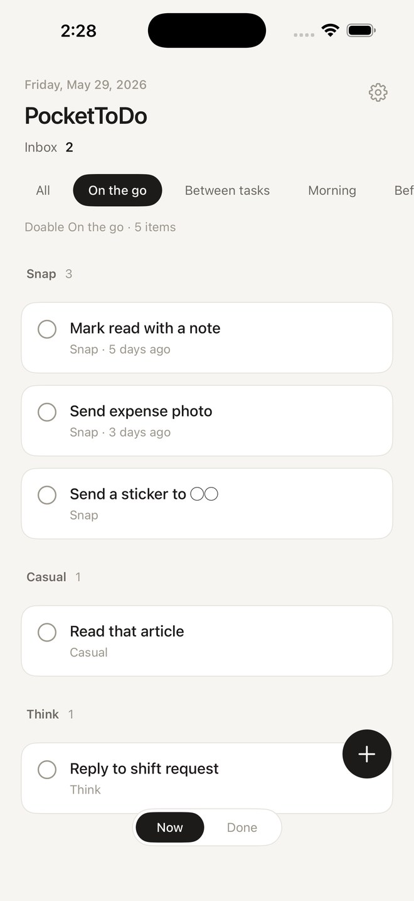
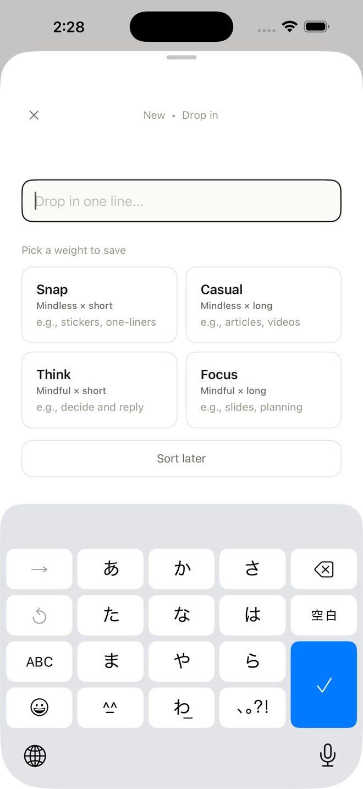
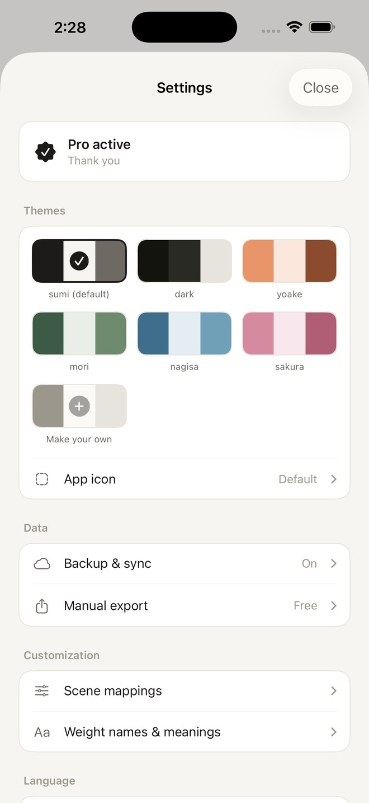
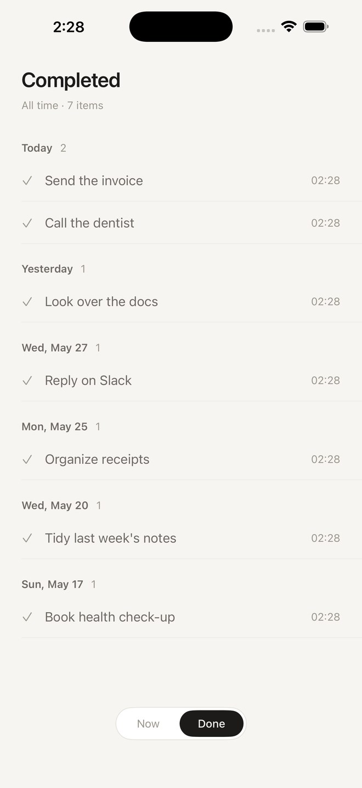
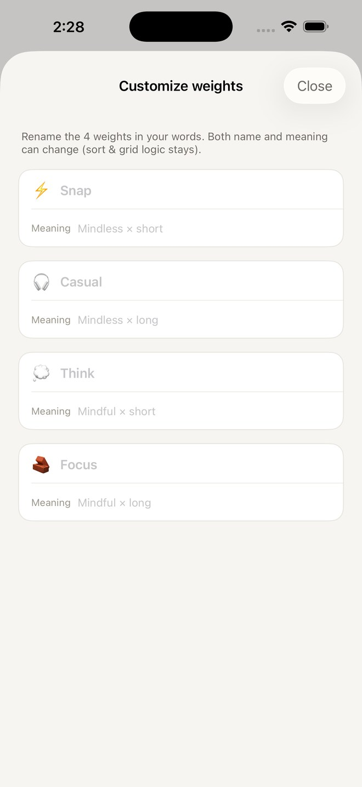

— 01 —
Pick by scene.
On the go. Before bed. Each scene surfaces only the tasks light enough to do right now, lightest first.
— pocket todo —
Drop in fast. Pull out by scene.
A small-task ToDo for your pocket.

— 01 —
On the go. Before bed. Each scene surfaces only the tasks light enough to do right now, lightest first.

— 02 —
One line of text, one tap to weight. Three seconds, done — captured before you forget.

— 03 —
Reskin the app and the home-screen icon together, with the mood you bring to it.

— 04 —
The records from before seven days ago are all kept. With Pro, look back across all time.

— 05 —
Rename the four weights — both names and meanings — in your own language. The sort and grid logic stays the same; only the visible words become yours.
— how it works —
01
Tap +, one line, pick a weight.
Done in three seconds.
02
On the go. Before bed.
Each scene shows what fits.
03
Lightest first. Swipe once to mark
a task complete.
— plans —
Free
Free, forever.
Pro
Everything free, plus,
— questions —
Your tasks stay on your device — not sent to our servers (only purchases go through Apple/RevenueCat). No account, no sign-in.
Your data is stored on your device. For now, there's no automatic transfer between devices (you can export a CSV to keep a record).
No. By design — PocketToDo never nags.
Open iPhone Settings → Subscriptions → PocketToDo. Your data stays after cancellation.
— made by —
Questions, requests, or bug reports — DM on X.
Replies may take a few days.
Keep it all. Make it yours.
No notifications. Nothing nags you.
© 2026 PocketToDo